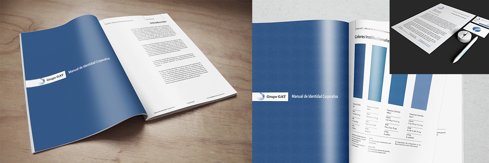

Manual de Identidad Global Rent Car
Global Rent Car, una empresa mexicana dedicada desde hace más de 20 años al transporte terrestre de nivel ejecutivo. Posicionada como una importante compañia, decidieron actualizar la forma en que sus clientes y competidores los ven. Gracias a mi experiencia fuí llamado por ellos para realizar un estudio que determinara la mejor manera de mostrar su imágen hacia los demás.
Tener tantos años con una empresa y no contar con un buen manual de identidad es una práctica imperdonable. Al llegar a esta empresa y darme cuenta de que no contaban con una guía de estilos gráficos para su publicidad me pregunté: ¿Y cómo pretenden que realice un logotipo o un sitio de ellos? Así que me dí a la tarea de crearles un nuevo y flamante Manual de Identidad Corporativa.
La desición de plasmar la imágen de su empresa debe darse durante sus inicios, ya que de ella depende cómo nos verán los demás durante el crecimiento de la compañía. Un manual de este tipo nos sirve para definir las líneas de estilo que debemos seguir para mantener una imágen uniforme que abarque todos los medios en los que representamos nuestra marca.
"No sabíamos que necesitabamos un manual para eso". Ahora nos hemos dado cuenta que podemos homologar todos nuestros futuros medios de comunicación y ofrecer a nuestros clientes una uniformidad que asociarán con nuestra empresa, además que les facilita el trabajo a ustedes como diseñadores.